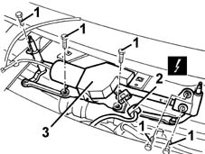

5050B38 WINDSCREEN WIPER ASSEMBLY - R+R OR REPAIR
- Path
- Procedures > 50 AUXILIARY UNITS > 5050 SCREEN WASHERS AND HEADLAMP WASH/WIPE > 5050B WINDSCREEN WASH/WIPE > 5050B38 WINDSCREEN WIPER ASSEMBLY - R+R OR REPAIR
- Kind
- repair procedure (removal / refitting; the operation number is the code)
- Applies to
- all engines; all production periods
- Interactive page
- https://sloeber94.github.io/elrnDB-fMltpl/en/#/2891848
Applies to: all engines; production: fino a 05/99, da 09/03, da 06/99 a 03/02, da 04/02 a 08/03, fino a 05/04
 Removing
Removing
 Refitting
RefittingOp. 5050B32 WINDSCREEN WIPER ARM/S - R+R
(left and right sides)
Op. 7055A18 L/H OR R/H SIDE RUBBING STRIP DECORATIVE SEAL - R+R
.
Op. 7040H30 FRONT PILLAR TRIM - R R
.
Op. 7055A20 L/H OR R/H SIDE RUBBING STRIP DECORATIVE SEAL - R+R
.
1. Undo the bolts.
2. Disconnect the electrical connection.
 | Name | Connector |
|---|---|---|
2 | Windscreen wiper motor |
3. Remove the windscreen wiper assembly.

Applies to: all engines; production: fino a 05/99, da 09/03, da 06/99 a 03/02, da 04/02 a 08/03, fino a 05/04
Refitting
RemovingCheck that the windscreen wiper assembly is not damaged.
Position the windscreen wiper assembly.
Connect the electrical connection.
Tighten the bolts.
Op. 7055A20 L/H OR R/H SIDE RUBBING STRIP DECORATIVE SEAL - R+R
.
Op. 7040H30 FRONT PILLAR TRIM - R R
.
Op. 7055A18 L/H OR R/H SIDE RUBBING STRIP DECORATIVE SEAL - R+R
.
Op. 5050B32 WINDSCREEN WIPER ARM/S - R+R
(left and right sides)
Check that the windscreen wiper is working properly.
Applies to: all engines; production: da 06/04
Removing
RefittingOp. 5050B32 WINDSCREEN WIPER ARM/S - R+R
(left and right sides)
Op. 7055A18 L/H OR R/H SIDE RUBBING STRIP DECORATIVE SEAL - R+R
1. Undo the bolts.
2. Disconnect the electrical connection.
Description | Connector | |
|---|---|---|
2 | Windscreen wiper motor |
3. Remove the windscreen wiper assembly.
Applies to: engines: 1.6 16v; production: da 06/04
Refitting
RemovingCheck that the windscreen wiper assembly is not damaged.
Position the windscreen wiper assembly.
Connect the electrical connection.
Tighten the bolts.
Op. 7055A18 L/H OR R/H SIDE RUBBING STRIP DECORATIVE SEAL - R+R
Op. 5050B32 WINDSCREEN WIPER ARM/S - R+R
(left and right sides)
Check that the windscreen wiper is working.
Topics linked from this page (5)
- 5050B32 windscreen wiper arm/s - r+r
- 7040H30 front pillar trim - r r
- 7055A18 Windscreen base TRIM - R.R.
- 7055A20 FRONT TRIM under WINDSCREEN with main beam headlamps - R.R.
- N15 Windscreen wiper motor